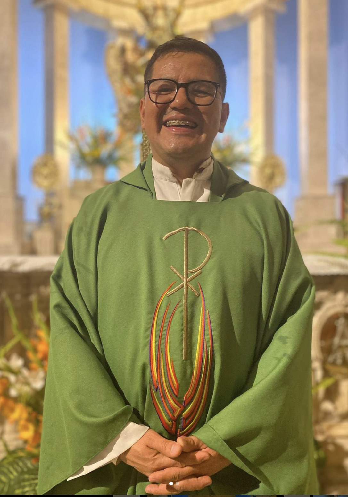

Oficina Parroquial
Parroquia Asunción de María de Tepalcatitlán
Parroquia Asunción de María de Tepalcatitlán

Raymundo Sánchez Aguilar
Ordenado sacerdote el 14 de mayo de 2016. Es párroco desde el 15 de diciembre de 2020.
Daniel
Encargado del cuidado y preparación de los artículos litúrgicos, y de la sacristía para cada ceremonia.
Secretaría: Carmelita
Teléfono: 55 5557 4812
Días: Martes a Sábado
Horario: 9:00 AM - 1:00 PM y 4:00 PM - 6:30 PM
Domingo: 8:00 AM, 11:00 AM, 1:00 PM, 6:00 PM
Martes: 6:00 PM
Miércoles a Sábado: 9:00 AM, 6:00 PM